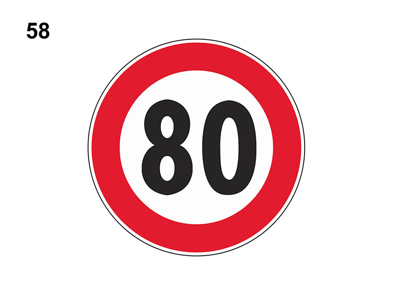

Limite massimo di velocità

E' un segnale di prescrizione (divieto) e indica la velocità massima consentita per tutti i veicoli (in questo caso 80 Km/h)
Ha validità immediatamente dopo il segnale.
E' valido 24 ore su 24.
Può trovarsi anche sulle autostrade.
Come detto vale per tutti i veicoli anche motocicli.
Non è vero che permette di effettuare il sorpasso a velocità superiore a quella indicata.
Ha validità immediatamente dopo il segnale.
E' valido 24 ore su 24.
Può trovarsi anche sulle autostrade.
Come detto vale per tutti i veicoli anche motocicli.
Non è vero che permette di effettuare il sorpasso a velocità superiore a quella indicata.